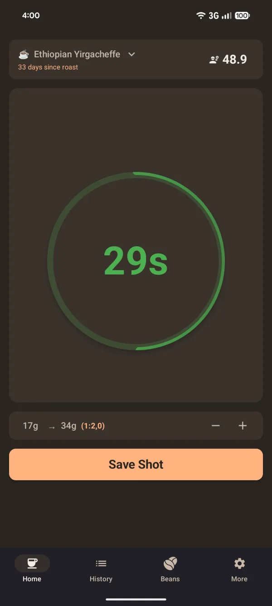
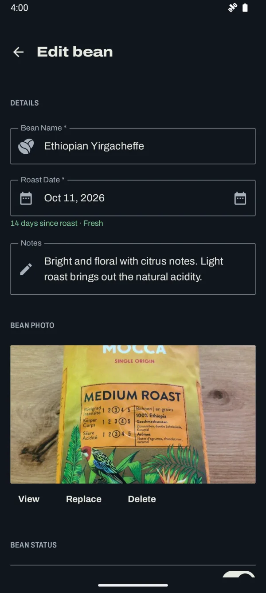
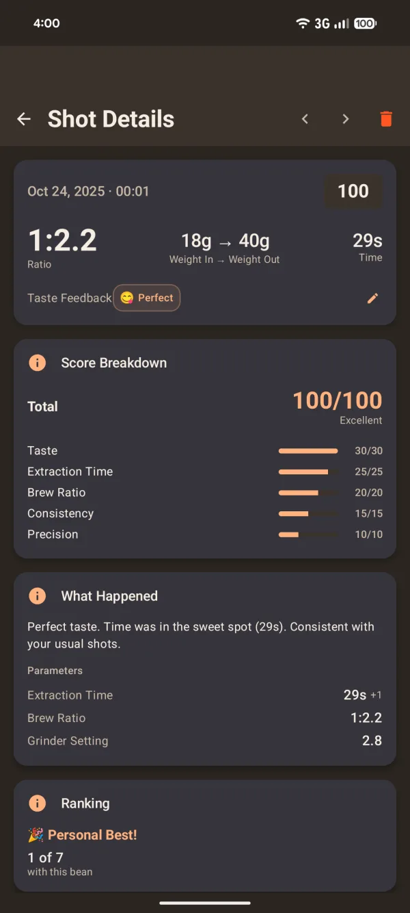
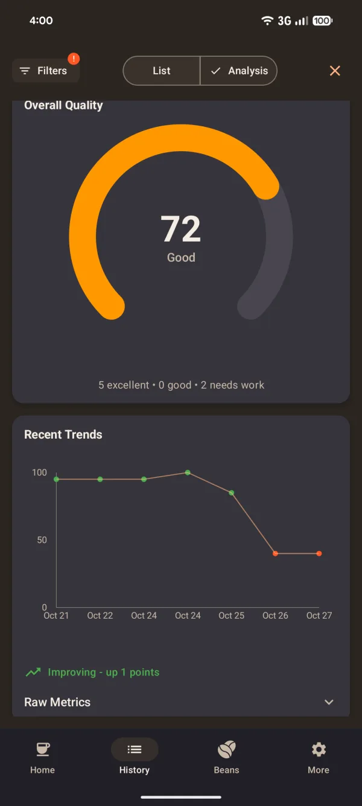
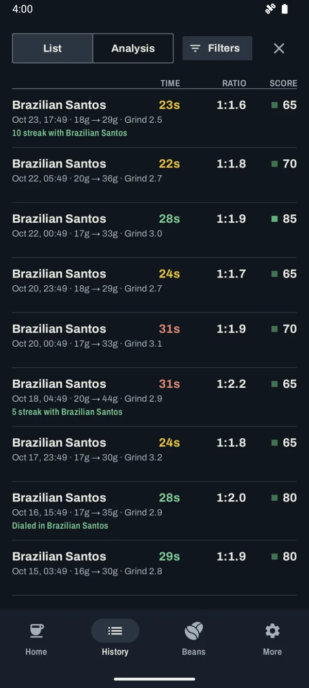
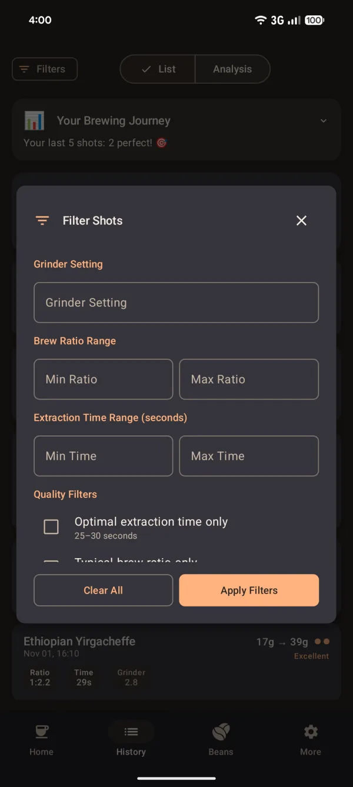

Say how it tasted. Get the next grind.
Coffee Shot Timer times your espresso, logs it against the bean, and turns “sour” or “bitter” into the grinder setting for your next shot.
- Free
- Works offline
- Open source
- Android 7+
Shot 1 Grind 3.0 · 18 g → 38 g (1:2.1) · 19 s
How did it taste? Pick one to see the next grind.
Example grinder with 0.1 steps. The shots are made up; the recommendations use the app’s own rules.
No magic. Three rules and your grinder’s step size.
Taste decides the direction. When you skip the taste, the timer decides. How far the shot missed 25 to 30 seconds decides how big the step is.
Grind finer
Tastes sour, or runs under 25 s
The water ran through too easily and left the sweetness behind. A finer grind slows it down.
“2 steps finer → 2.8”
Keep it
25 to 30 s, tastes right
The setting is stored with the bean for the next time you open that bag.
“Keep current setting”
Grind coarser
Tastes bitter, or runs over 30 s
The shot ran long and pulled out the harsh stuff. A coarser grind lets the water through faster.
“1 step coarser → 3.1”
| Time outside 25 to 30 s | Recommendation |
|---|---|
| Up to 3 seconds | 1 step |
| 4 to 6 seconds | 2 steps |
| More than 6 seconds | 3 steps |
You set your grinder’s scale and step size once during setup, so “1 step” means a click on a stepped grinder or 0.1 on a stepless dial. The app never suggests a setting outside your grinder’s range.
Every bag keeps its own dial.
Switch from the Ethiopian to the Colombian and the app switches with you: last grind, roast date and the next-shot recommendation come along with the bean.
- Next-shot guidance
- The last recommendation is saved per bean and waiting when you come back to it.
- Last grind setting
- Shown on the bean, so a re-opened bag starts where you left off.
- Roast date
- Days since roast next to the bean name while you pull the shot.
- Package photo
- Snap the bag so you recognise it when you buy it again.
- Dial-in status
- New Bean, Experimenting, Needs Work or Dialed In, from your recent shots with that bean.


After the shot, the numbers explain themselves.
Each shot gets a score out of 100 and a plain sentence about what happened. Over a few days you see whether the bag is getting better or drifting.




Nothing leaves your phone.
The app has no internet permission. That isn’t a setting you can forget to turn off: Android won’t let it go online.
| Internet access | None | No network permission in the app manifest. |
|---|---|---|
| Account | None | Open it and start pulling shots. |
| Tracking and analytics | None | No analytics or crash-reporting libraries. |
| Permissions | 2 | Camera for bean photos, vibration for timer feedback. |
| Price | Free | No ads, no subscription. |
Built in the open.
MIT licensed and developed on GitHub. Report a bug, suggest a rule, or help translate. The app ships in English and German.
Open the bag. Pull a shot. Ask what’s next.
Free on Google Play for Android 7 and newer.
Get it on Google Play